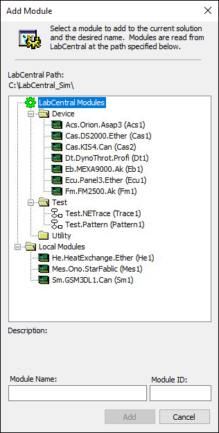
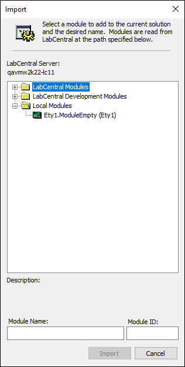
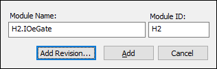
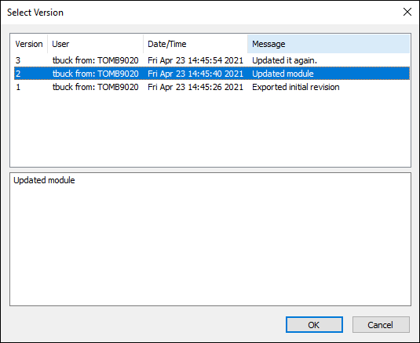
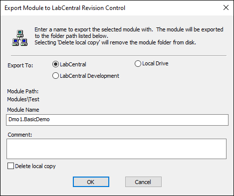
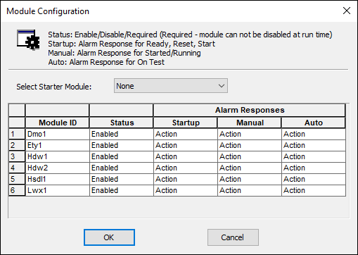
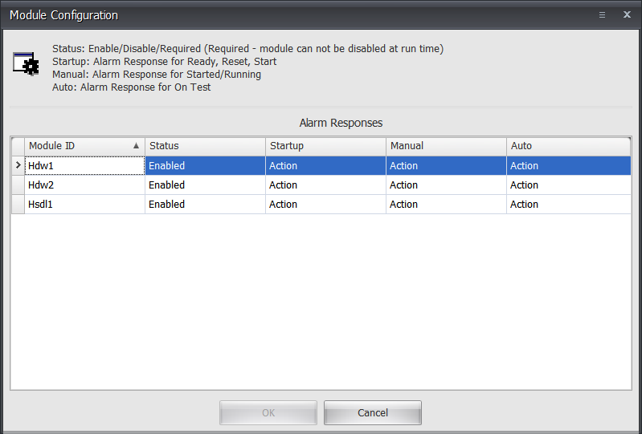
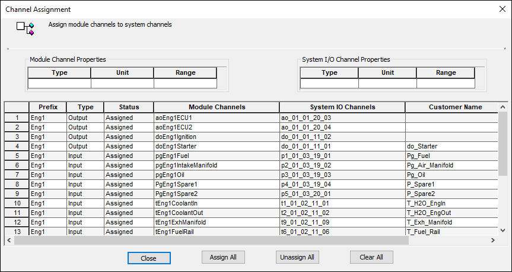
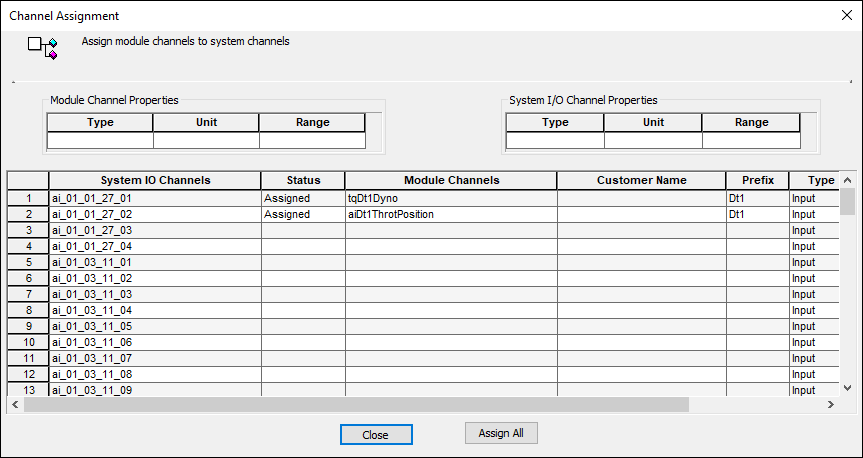

iTest User's Guide
Modules in iTest are a collection of iTest files that are designed to be added and removed from your solution as a named unit and provide additional functionality (e.g., running a specific test or providing a ready to run interface to a device). To support the use of modules, set the MODULARITY powertek.ini setting to TRUE. Modules can be managed using Test Manager or SolutionBuilder.
Some modules are installed with iTest, and others can be obtained from A&D Technology. Example modules from A&D Technology include:
Available Example Modules
| Name | Description |
| Proc.PowerMap | A universal Powermap module for Engine Test. |
| Cas.AD | An A&D Cas Combustion module. |
| Acs.Orion | An interface that provides the hooks for your application to be controlled by Orion. |
| Eb.BestSokki8500 | An interface to a Best Sokki 8500 emissions bench. |
| Eb.MEXA.7k.HORIBA.AK | An AK interface to a Horiba Mexa 7000 bench. |
| Pndt.Pendant | An A&D operator pendant. |
A module has the same file structure as a solution. It may contain displays, procedure files, channel definition files, limit files, log order list files, and more. However, all files and channel names in a module should have a module ID located somewhere in the filename or channel name. This allows a module’s files and channels to be unique as well as assist in renaming and copying the module.
 |
NOTE: | Test Manager and SolutionBuilder do not currently enforce this rule. However, it should be adhered to in order to have a well-behaved module. |
Modules are categorized into the following types:
Module Types
| Type | Description |
| Device | Defines the operation of external measuring devices or control systems (e.g., ECU system, CAS system, or Engine Coolant Conditioner). |
| Specimen | Defines the unit under test (e.g., an engine or a transmission). |
| Test | Defines a test cycle (e.g., a steady state schedule, a transient test, etc.). |
| Utility | Defines any miscellaneous modules and is typically used for special calculations, report packages, etc. |
Modules typically use the following naming convention: <Module ID>.<Name> (e.g., Dmo1.Module). The module name can consist of alphanumeric characters, periods, and underscores. Changing the <Module ID> component of a module name does not automatically modify the Module ID for the module. Modules can be renamed in SolutionBuilder and Test Manager by using the Rename right-click option in the editor.
|
NOTE: | iTest does not enforce this naming convention. However, it should be adhered to in order to have a well-behaved module. |
Module IDs follow a specific naming convention (as follows):
Module IDs can be renamed in SolutionBuilder and Test Manager by editing the Module ID field. Alternatively, use DoModuleMerge from the command-line to rename the module ID:
|
NOTE: | iTest must not be running when using DoModuleMerge to rename the module. |
DoModuleMerge.exe Rename ModuleFolder OldModuleID NewModuleID SolutionFolder
Example:
DoModuleMerge.exe Rename C:\ADT\iTest4.3\Modules\Test\Dmo1.BasicDemo Dmo1 Dmo2 C:\ADT\iTest4.3\Solution.Demo
Modules can be stored on your local drive, a LabCentral shared folder, or another shared folder on your network. When adding/importing modules, a dialog will display with a list of available modules in your environment:
|
NOTE: | Only modules with a matching GLevel as the solution will appear in this list. |
Add Module Dialog

Folders under the $SYSTEMDIR that contain a module.xml file will display under the Local Modules section in the Add/Import Module dialog. These folders are conformed to the standard module format.
The ICENTRAL= config.ini setting specifies the folder designated by LabCentral for holding the common module library. If you are connected to LabCentral, the ICENTRAL= config.ini setting is automatically written. Normally, this is a network folder name that is shared by the LabCentral server. Any modules listed in this folder will display under the LabCentral Modules section in the Add/Import Module dialog. For more information, refer to the Interacting with LabCentral documentation.
Example:
ICENTRAL=\\QAVMW2K22-LC12\CONFIG
You can import modules from LabCentral using Test Manager or SolutionBuilder. When using module revision control (i.e., ModuleRevisionControl=TRUE), you can import modules that are still under development.
|
NOTE: | When importing modules, certain file types must be in a subfolder, not in the root module folder, to be included as part of the imported module. This includes, but is not limited to, TXT, CSV, and CFG files. |
There are two methods to import modules in Test Manager:
There is a single method to import modules in SolutionBuilder:
The Add/Import Module dialog displays; this dialog differs very slightly in appearance between Test Manager and SolutionBuilder:
Add Module Dialog (example from SolutionBuilder)

Select a module from the list and enter an ID for it in the Module ID field. Refer to the Module Naming section for the proper module ID naming convention. Click Add to import the module.
|
NOTE: | Modules under the LabCentral Development Modules folder are only available when iTest is connected to LabCentral and ModuleRevisionControl=TRUE. |
Storing modules in revision control allows you to choose from previous versions during import. This is done by clicking the Add Revision… button. This button is only available when importing a module from the LabCentral Modules or LabCentral Development Modules folders.
Add Revision

This displays the Select Version dialog where you can select from any version of the module that has historically been uploaded to LabCentral. Select the desired version, and then click OK to import it.
Select Version

For more information about revision control, refer to the Interacting with LabCentral documentation.
From Test Manager or SolutionBuilder, you can export modules within your solution to LabCentral or to your local drive. This allows modules from one test system to be shared with other test systems. When using module revision control (i.e., ModuleRevisionControl=TRUE), you can export modules under development to an alternative LabCentral folder.
There are two methods to export modules from Test Manager:
There is a single method to export modules from SolutionBuilder:
The Export Module to LabCentral dialog displays; this dialog differs very slightly in appearance between Test Manager and SolutionBuilder. From this dialog, you can provide an alternative name for the destination module; refer to the Module Naming section for the proper naming convention. You can export the module to your local drive or the LabCentral Modules folder. Enter any applicable comments, and then click OK to export the module.
Export Module to LabCentral (example from Test Manager)

Notes:
ModuleRevisionControl=TRUE; this option allows you to export modules still under development to the LabCentral Modules_Development folder as well as enter any applicable comments. For more information about revision control, refer to the Interacting with LabCentral documentation.ModuleRevisionControl=FALSE, or if exporting to a local folder, comments are disabled. |
WARNING: | If a layout contains a module ID in its file name, then it will be included in the export; however, the filelist.xml file may not be updated. This also applies when a module ID is used as a case-insensitive substring. For example, a module with the “Test1” MID will include a layout with the “ManualTest1” filename in the export. |
If you have created module sub-folders in the solution that did not exist prior to importing the solution, additional steps must be taken to ensure that files added to the sub-folder are exported successfully. This is accomplished by editing the filelist.xml file located in your $SUPPORTDIR. Currently, there is no GUI support for this feature; to edit the file, open it in a text editor. A typical FileList.xml file is displayed below:
Example:
<files>
<copy>
<f>Ecc2.Config.drv</f>
<f>Ecc2.ini</f>
<f>Calculations\10Hz\Ecc2.dat</f>
<f>Calculations\10Hz\Order.Ecc2.txt</f>
<f>Calculations\1Hz\Ecc2.dat</f>
<f>Calculations\1Hz\Order.Ecc2.txt</f>
<f>Calculations\SystemRate\Ecc2.dat</f>
<f>Calculations\SystemRate\Order.Ecc2.txt</f>
</copy>
<merge>
<f>Config.drv</f>
<f>InterVar.dat</f>
<f>settings.ini</f>
<f>Data\MAIN.LOL</f>
</merge>
</files>
This feature enables you to export all files within the specified folder whether they existed before the module was imported or not. To add a sub-folder, add a new node called <copyfolder> beneath the <files> node:
Example:
<copyfolder> <f>FolderName</f> </copyfolder>
Where:
The Module Configuration dialog allows you to determine module settings from a single interface. From this dialog, you can enable and disable modules as well as change their alarm responses. This dialog can be accessed from the following locations:
All available modules in your solution will appear in the dialog unless it is launched from a specific module in Test Manager or SolutionBuilder. In this case, only the selected module will appear in the dialog.
Module Configuration from Test Manager

Module Configuration from AutomationPanel

Module Configuration from SolutionBuilder
You can set the status of each module using the drop-down menu. Once you have selected the status, iTest will set a channel (e.g., flg<MID>Disabled) in the <MID>.ini file to either -1, 0, or 1; refer to the table below for descriptions of each channel value. Each module's procedures and calculations are then limited to what they can do based on this channel value.
Status Settings
| Status | Channel Value | Description |
| Required | -1 | Module is required. You cannot enable or disable a module at runtime. |
| Enabled | 0 | Module is enabled. Module configuration can still be modified during runtime. |
| Disabled | 1 | Module is disabled. Module configuration can still be modified during runtime. |
In addition to enabling and disabling modules, you can change how the module will react to fault responses that occur while the module is communicating with its device. Each fault response can be set to Action, Notify, or None. Action indicates letting the default action in the module occur if there is a fault. Notify indicates sending a message to the message queue and showing the module has faulted but without taking action. None indicates that the fault should be ignored. All of these fault responses are changeable at runtime in the Module Configuration dialog and while creating the module.
Fault responses are categorized; the operator can distinguish between faults that occur during startup, manual mode, and automated testing. A different response can be selected for each module in each state of operation.
Fault Responses
| Fault Response | Description |
| Select Starter Module | Selects the module responsible for starting the engine. Typically, this is the dyno/throttle or engine module. This setting is not available when launching the Module Configuration dialog from AutomationPanel. |
| Startup | Selectable fault response for system startup phases (e.g., Ready, Reset, Starting). Options include: - Action: Fault response will result in a defined action. - Notify: Fault will notify the user with an operator prompt. - None: Module fault should be ignored. |
| Manual | Selectable fault response for the system running (e.g., started but not running a test). |
| Auto | Selectable fault when running a test (e.g., started and running a schedule test). |
| Fault | Indicates the fault condition of the module. |
The Channel Assignment dialog allows you to assign module channels to system I/O channels where appropriate. If the module contains a file that uses the io<MID>.fil format, then the Channel Assignment dialog will appear automatically after the module is added. Any channel in the module's I/O file appears in the grid, and you can assign it to any channel that has not already been assigned in the solution. The channels from the solution are located in the ioSys.fil channel definition file. The ExtraSysIO and ExtraModuleIOFiles powertek.ini settings can be used to include channels from other channel definition files.
After importing a module and assigning channels, you can go back to the Channel Assignment dialog by right-clicking on the module and selecting the Channel Assignment option. This displays the assignment list for that module.
Channel Assignment Dialog

Test Manager and SolutionBuilder offer an alternative Channel Assignment dialog that allows you to view empty channels prior to selecting an assignment. In Test Manager, this dialog can be opened by right-clicking the Channel Definitions tree node and selecting the Channel Assignment option. In SolutionBuilder, this dialog can be opened by right-clicking the Sys tree node in the Channel Definitions editor.
Alternative Channel Assignment Dialog

Channel Assignment Column and Action Descriptions
| Column/Action | Description |
| Columns | |
|---|---|
| Prefix | The module ID. |
| Type | Input or output. |
| Status | Status values include Assigned, Previous, and Blank. |
| Module Channels | The name of the channel in the module. |
| System IO Channels | The name of the channel in the solution. |
| Customer Name | The customer name of the channel in the solution if it exists. |
| Actions | |
| Close | Exits the Channel Assignment dialog. |
| Assign All | Assigns multiple channels simultaneously. First, select the system channels to assign to the various modules, and then click the Assign All button. |
| Unassign All | Unassigns all module channels. When this option is selected, the channel status changes from Assigned to Previous, where Previous indicates that the channel was assigned previously but is currently unassigned. From this state, you can click the Assign All button to revert to the original state. |
| Clear All | Clears the assignments in the System IO Channels and Status columns so that the module channels can be assigned to different system channels. |
The Channel Assignment dialog can be opened using the following command line arguments. If the channel assignments are changed, and iTest Console or AutomationPanel is running, then you will be prompted to restart iTest so the new assignments can be activated. These arguments are case-sensitive and are only supported when launching Test Manager.
You can launch the Channel Assignment dialog for a specific module by using the ChanAssignDlg argument and specifying the module ID. If the module ID is unspecified, then the Channel Assignment dialog displays all the eligible channels from any modules (i.e., channels found in all io<MID>.fil files and any files listed in the ExtraModuleIOFiles powertek.ini setting).
Syntax:
TestMgr.exe ChanAssignDlg [MID]
Parameters:
Example:
TestMgr.exe ChanAssignDlg Acs.Orion.Asap3
This argument launches the alternative Channel Assignment dialog. If a channel definition file name is unspecified, then the Channel Assignment dialog shows all the channels from any eligible system-level channel definition files (i.e., ioSys.fil and those listed in the ExtraSysIOFiles powertek.ini setting).
Syntax:
TestMgr.exe SysChanAssignDlg [DBFileName]
Parameters: